My Blog

Grasshopper 101
05/07/2024
Diseño parametrico
interfaz y trabajo simultaneo Rhino/GH, componentes.
descargo de responsabilidad:
LAHV Design es un proyecto personal sin fines de lucro, todos los recursos(redactados y/o descargables) aquí compartidos son libres de uso, sin embargo no me hago responsable de ninguna manera de las decisiones que terceros tomen con dicho recuso.
Como ya sabemos Grashopper (GH) es una herramienta muy potente de programación visual para rhinoceros 3D (Rhino) basada en el lenguaje de programación Python, herramienta que nos permite asignar valores alfanuméricos a parámetros dentro de un diseño de Rhino. En esta entrada de mi blog intentaré explicar en la medida de mis capacidades los conceptos de los componentes más comunes usados en GH.
Entorno de trabajo
Primero comenzaremos abriendo un archivo nuevo de rhino en milímetros. Para poder lanzar una instancia o ventana de grashopper lo que podemos hacer es hacer clic en la pestaña de standard y después hacer clic en el icono de grashopper.
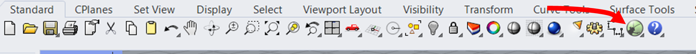Otra forma de hacerlo es tecleando el comando grashopper en la barra de comandos de rhino.
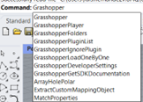Se nos abrirá una ventana como la que sigue.
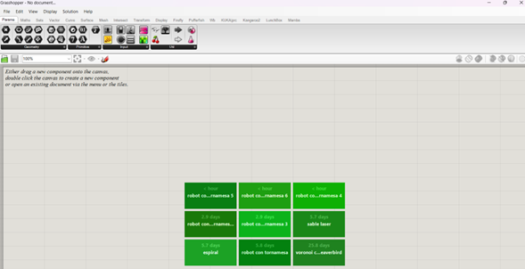En esta podemos identificar el nombre de nuestro archivo actualmente no guardado
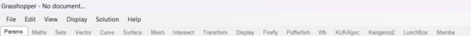Así como la barra de herramientas con archivo, editar, ver, display, solución y ayuda. Y las pestañas de herramientas.
De donde podemos sacar los componentes necesarios para realizar nuestros diseños.
También en esta barra de pesatañas se mostraran los pluggins que le podemos instalar a grashopper para que sea mas especifico para una u otra función.
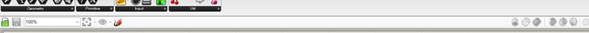En la parte inferior a las pestañas de componentes encontraremos una barra de estado donde podemos ver de izquierda a derecha un botón para abrir un nuevo documento, guardar el documento actual así como el zoom actual del área de trabajo. Un botón para hacer un zoom selectivo. Un botón para crear capturas de posición del zoom para poder ver ciertas partes de nuestro programa. Y el icono con forma de pluma sirve para realizar anotaciones a mano alzada en el área de trabajo esto, sirve muchísimo para realizar pequeños bocetos.
En la parte derecha de esta barra encontraremos opciones de visualización para los componentes de grashopper en rhino.
Por ultimo menciono que nuestra área de trabajo en grasshopper tiene unos limites visibles sin embargo este no tiene ninguna influencia sobre el algoritmo generado por lo que podemos colocar componentes fuera del área de trabajo y estos seguirán funcionando sin problema.
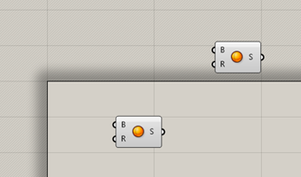Distribucion de la interfaz
Ya que grasshopper es una instancia dentro de rhinoceros tendremos que trabajar simultáneamente en 2 ventanas al mismo tiempo, a menos de que tengamos 2 monitores para trabajar la solución mas comoda seria trabajar solo en perspectiva y partir el escritorio en 2 ventanas esto lo podemos hacer desde Microsoft Windows 11 de manera muy simple.
- Teniendo la ventana de rhinoceros activa en el escritorio hacer clic en la tecla de Windows y presionar la flecha izquierda o derecha del teclado. 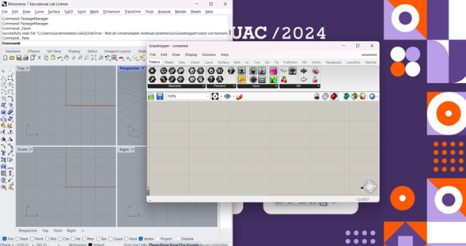
- Después hacer clic en la ventana de grasshopper y moverla al lado contrario de la ventana de rhino en mi caso a la derecha con la combinación Windows+derecha 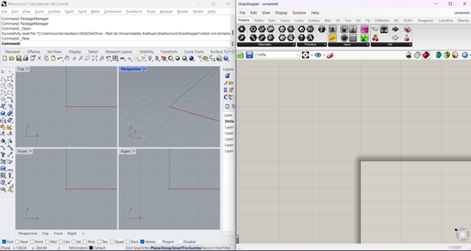
- Ahora para trabajar de manera un poco mas cómoda yo personalmente prefiero trabajar la ventana perspectiva en lugar de tener las 4 ventanas en rhino.
De esta manera logramos tener 2 ventanas simultaneas en nuestro monitor.
Haciendo doble clic en el nombre “perspective” se maximiza esta ventana y así del lado izquierdo pantalla con el botón derecho del mouse podemos rotar la ventana y del lado derecho podemos arrastrar nuestro programa hasta ver el componente que deseamos manipular.
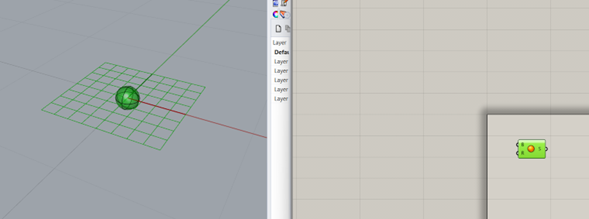Por defecto al seleccionar un componente de grashopper este se mostrará verde en rhinoceros mostrándonos el objeto que deseamos manipular.
Al des seleccionar este se volverá rojo.
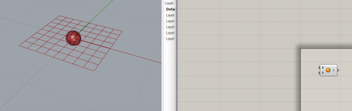Explicación de los componentes.
Como ya lo hemos mencionado grasshopper es un lenguaje de programación visual que esta basado en flujo lo que quiere decir que en lugar de escribir líneas de código de un lenguaje de programación. Lo que haremos será conectar unos bloques los cuales tienen internamente unas instrucciones del lenguaje de programación y nosotros solo veremos los parámetros de entrada necesarios para poder procesar esas instrucciones. Y este nos arrojara un resultado visible en el entorno de rhino y puede o no tener parámetros a la salida. Se vería algo como lo que sigue.
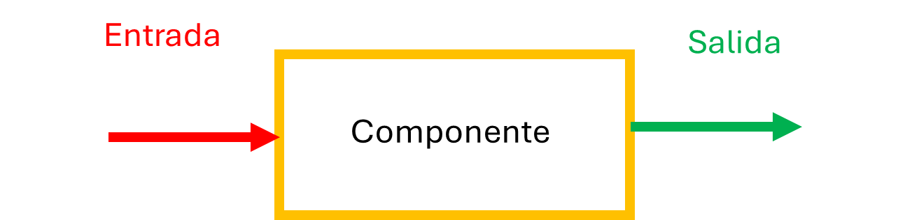Esta sería la forma más básica de un algoritmo de grashopper. De igual forma podemos conectar varios componentes en serie.
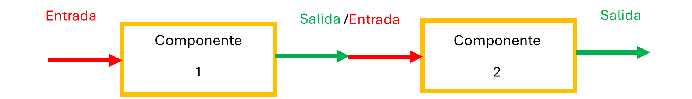De esta forma la salida del componente 1 alimentaria la entrada del componente 2. Además de esto las salidas y entradas de cada componente pueden ser más de una.
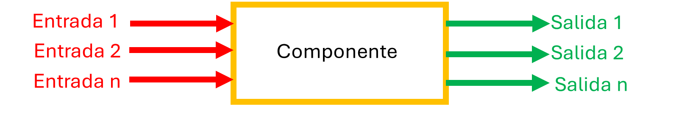Por ejemplo, tomaremos un cubo. Para hacer esto hay varios componentes que nos sirven, sin embargo, yo ocuparé para esto el componente llamado “box rectangle” el cual crea un prisma rectangular que llama caja.
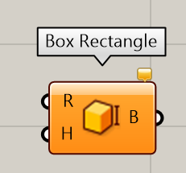Cuando colocamos un componente en el canvas lo podemos hacer de diferentes formas la primera y mas rápida es hacer doble clic en el canvas y teclear “box”
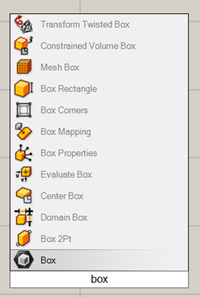O localizar el componente en las pestaña de herramientas de superficie y en la categoría de primitivos
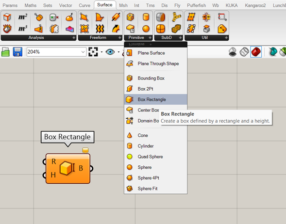Al colocar el cursor del mouse sobre el componente nos da una descripción si hacemos un clic lo sujetamos con el mouse y si hacemos otro clic lo soltamos en el área de trabajo.
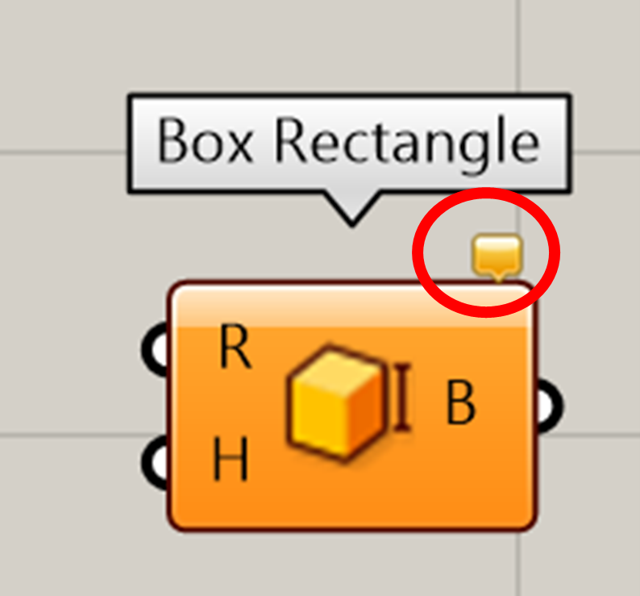El color de los componentes nos indica visualmente de su estado en este caso me esta diciendo que tiene una advertencia y aparece un cuadro de dialogo en su parte superior derecha.
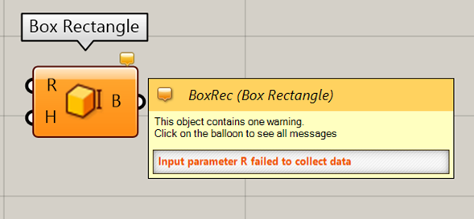Al colocar el mouse sobre del este me describe el componente y en letras rojas me muestra la advertencia.
En el lado izquierdo del icono del componente podemos ver una letra R y una letra H que son las iniciales de Rectangle y Height respectivamente.
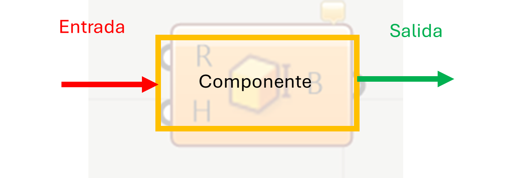Estas letras como están del lado izquierdo corresponden a las entradas del diagrama de los gráficos que vimos con anterioridad.
Si coloco el mouse sobre las letras me da una descripción de lo que necesita el componente para funcionar.
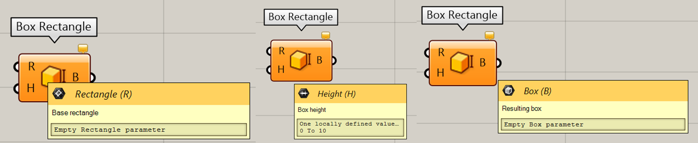Encima de la descripción a un lado de cada nombre de entrada/salida hay un icono, este corresponde al tipo de información que necesita o brinda dicho componente. Esto nos sirve para saber que objeto podemos conectar en cada lado.
Así mismo debajo de la descripción existe un campo rectangular donde se nos informa si existe información precargada o si no hay información.
En el campo Height podemos ver que existe un rango de caro a diez como nos esta indicando esto le dará un valor de 10 milimetros.
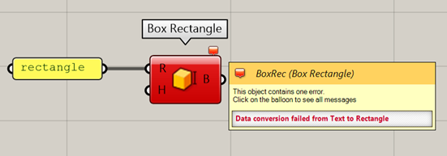Por ejemplo, este error me esta hablando de que no pudo aceptar una cadena de caracteres con la palabra “rectangle” ya que estaba esperando recibir una definición de curva.
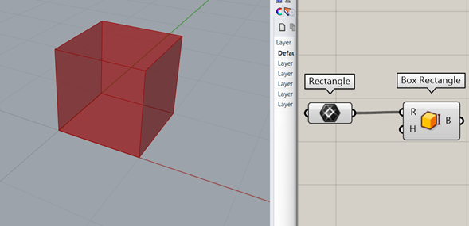Como en el ejemplo conectamos un rectángulo en la entrada y el componente cambia a color gris e inmediatamente el entorno de rhinoceros muestra el cubo con la definición del algoritmo.
Para conectar dos componentes entre si es suficiente con hacer clic sostener y soltar del punto A al punto B.
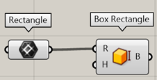La línea creada entre ambos componentes nos brinda información sobre el algoritmo.
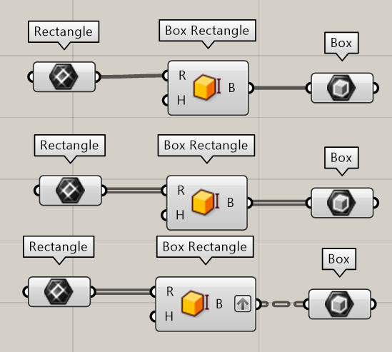Si vemos una línea solida nos indica que tenemos solo 1 elemento.
Si vemos una línea gruesa compuesta de dos líneas solidas negras y una línea blanca significa que tenemos múltiples elementos.
Si tenemos una línea punteada entre dos componentes significa que se trata de una estructura de árbol, ese tema lo veremos mas adelante cuando hablemos de listas y estructuras de árbol.
Hemos llegado al final de este artículo, como siempre espero que este recurso te haya sido de ayuda. Te recuerdo que te dejo en un archivo comprimido el archivo de rhino .3dm y el archivo de grashopper .gh para que puedas ver mejor lo que vimos en este artículo.
© Your Site Name. All Rights Reserved. Designed by HTML Codex